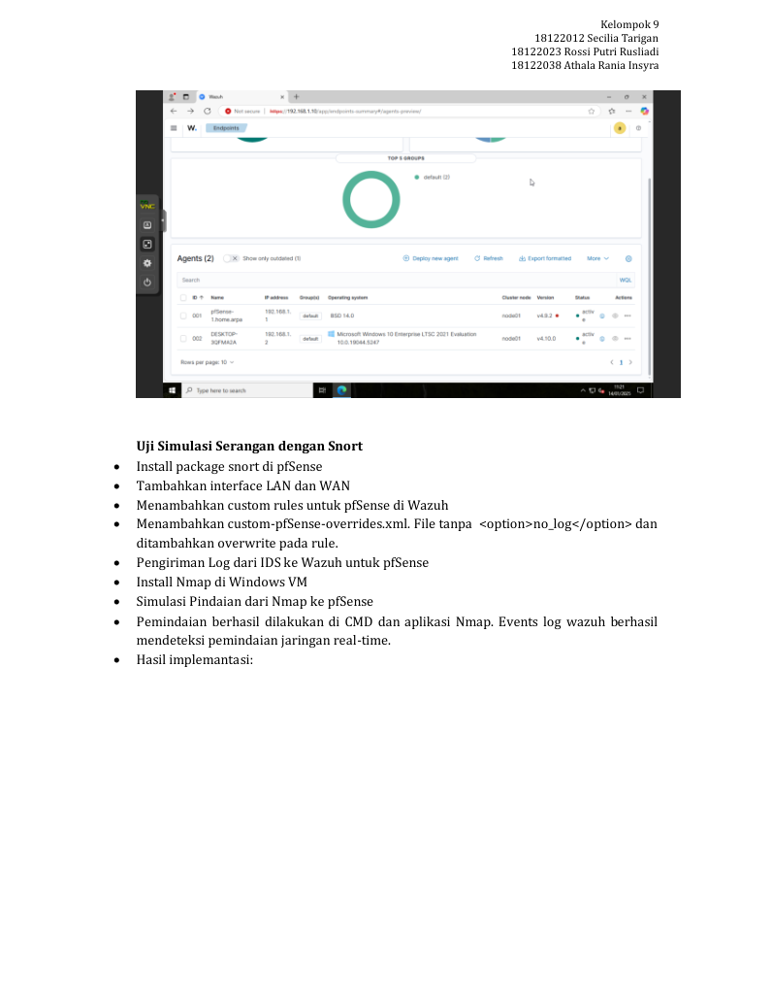

Firewall + Snort
Central monitoring
Endpoint agent
Enterprise Security Integration & Centralized Monitoring
Connecting firewall events and endpoint telemetry into one monitoring workflow.
- Verified pfSense and Windows agent connectivity in Wazuh.
- Detected an Nmap network scan in the monitoring event logs.
- Documented file integrity monitoring configuration.
Explore case study
Situation
Firewall and endpoint events needed a common monitoring view in a virtual security lab.
Task & contribution
Integrate pfSense with Wazuh, enable intrusion detection, and document testing. I participated in the three-person project; the report does not allocate individual tasks.
Action
The team configured remote logging and Wazuh agents, enabled Snort on LAN/WAN interfaces, adjusted custom pfSense rules in Wazuh, and used Nmap from a Windows VM to simulate a network scan. The report also documents Windows file integrity monitoring configuration and LLDP troubleshooting.
Result & evidence
The report records connected agents and successful scan detection in Wazuh. It documents configuration steps for FIM but leaves vulnerability-scan findings unanswered; no quantified threat-reduction result is claimed.

Source notes & limitations
Source discrepancy: the CV names Suricata; the report documents Snort. Logging examples mention both ports 514 and 1514, so no definitive port configuration is asserted.